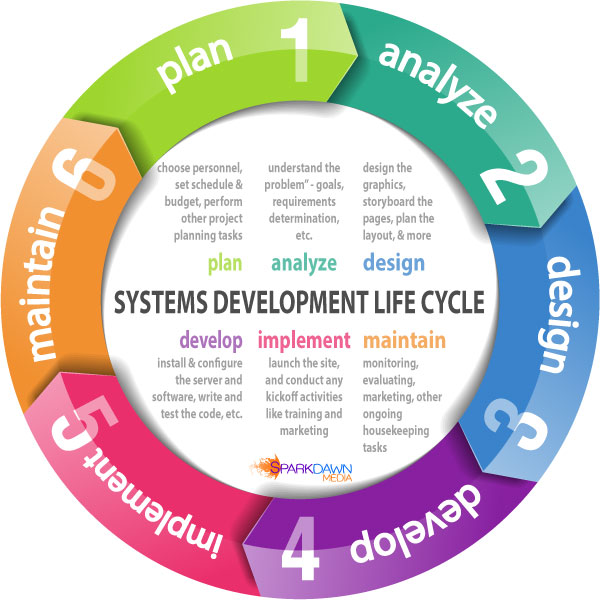

Definition: The Systems Development Life Cycle (SDLC), also referred to as the application development life-cycle, is a term used in systems engineering, information systems and software engineering to describe a process for planning, creating, testing, and deploying an information system. The systems development life-cycle concept applies to a range of hardware and software configurations, as a system can be composed of hardware only, software only, or a combination of both.
System Development Life Cycle
A Li'l More on System Development Life Cycle:
A systems development life cycle is composed of a number of clearly defined and distinct work phases which are used by systems engineers and systems developers to plan for, design, build, test, and deliver information systems.
Various SDLC methodologies have been developed to guide the processes involved, including:
Waterfall model (which was the original SDLC
method)
Rapid application development (RAD)
Rapid application development (RAD) is a software development methodology that uses minimal planning in favor of rapid prototyping. A prototype is a working model that is functionally equivalent to a component of the product.
Joint application development (JAD)
Joint application design (JAD) is a process used in the prototyping life cycle area of the Dynamic Systems Development Method (DSDM) to collect business requirements while developing new information systems for a company.
The fountain model, the spiral model, synchronize-and-stabilize and more..
Fountain: while the hardware team is doing its job, artwork starts conceptual work, and coding starts some prototyping on preexisting hw. When artists and hw finishes, coders integrate these onto their code and continue 'til finishing the game...
The system development life cycle framework provides a sequence of activities for system designers and developers to follow. It consists of a set of steps or phases in which each phase of the SDLC uses the results of the previous one. These stages or steps can be characterized and divided up in different ways, including the following:

Here are some examples, that show the usage of SDLC in real world.